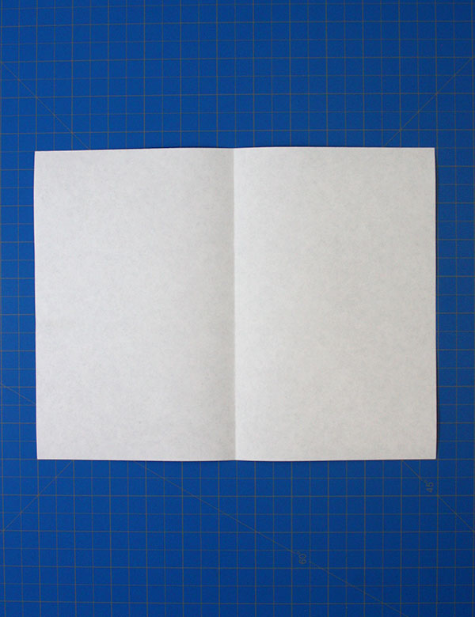
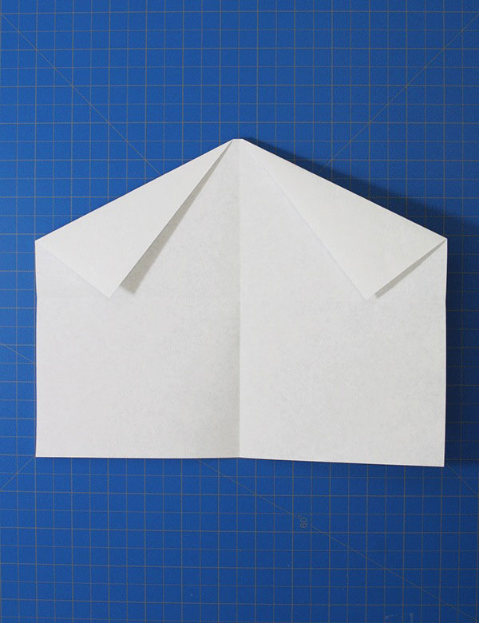
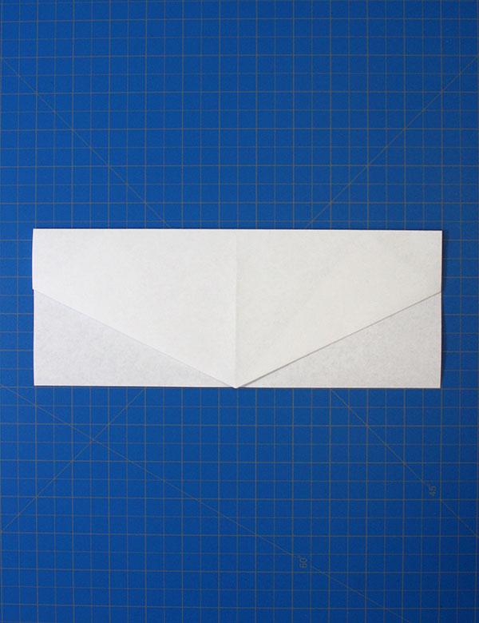
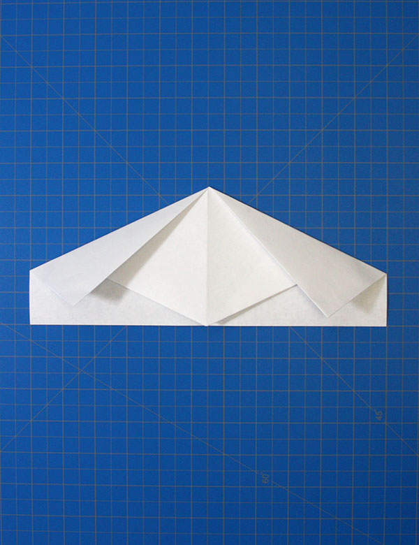
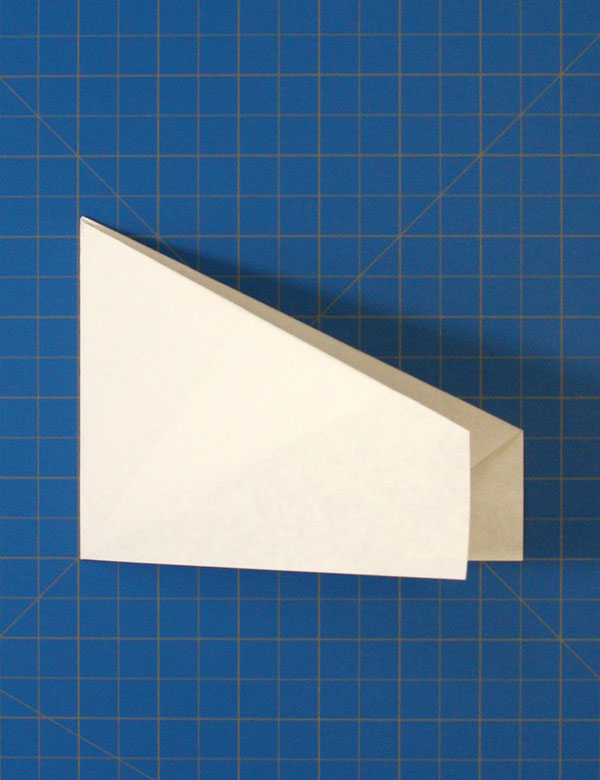
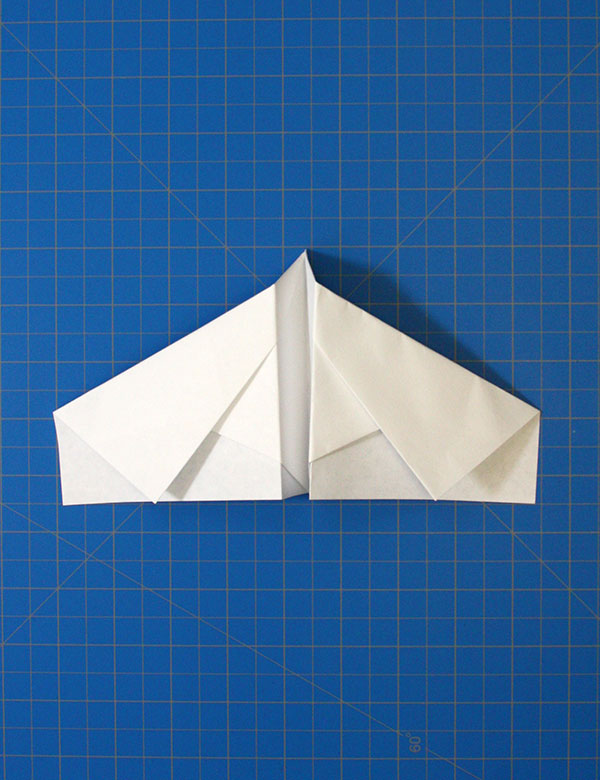
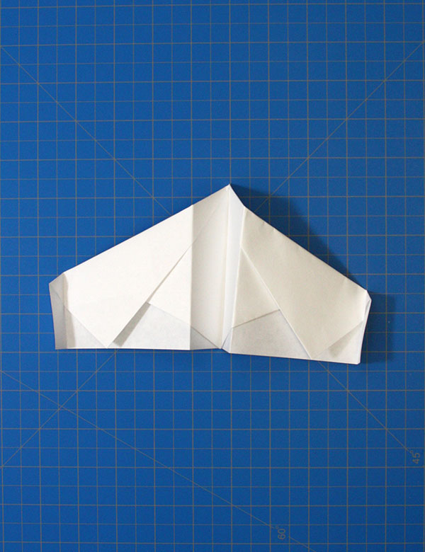

Fold the paper in half.
Unfold, then fold the top corners to the center horizontal line.
Fold the peak down to the bottom edge.
Again, fold the top corners to the bottom center of each side.
Fold the plane in half towards you.
Fold out each side to create the wings.The body should be about a 1/2 an inch tall.
Finally, bend the edges up about a 1/2 of an inch.
The final product should look like this.